2026-07-03 · model_ColumnSetup_00 · target IISL · base rate 2048 Hz (488.28 µs budget per tick)
The fable OSI + authority-factor runtime stopped the Speedgoat with a CPU overload when the dd pause switch was flipped to resume and the indicator started evaluating. Reproduction (actuator disconnected): the target ran 30 s paused with TET ≈ 50 µs, then died 5 s after resume with
Overload limit (0) exceeded in 0.000488281s (tid=0) rate with 1 overloads TETMax = 780.2 us (budget 488.3 us)
The 5 s delay is diagnostic: it is exactly when the 5 s slow-spectral ring first fills and the whole slow pipeline — two 2048-pt FFTs, medians over the 99×17 spectra ring, classification, residual branch and the 25×99 prediction grid — landed in a single base-rate tick, on top of the fast-path work and the TSE stiffness update that always shared the same tick (64 divides 256). The same burst design also explains the “sometimes it works until the fast drop” observation: whichever event first stacked the heavy branches into one tick (ring fill, calibration finalize, trips + prediction) pushed that tick over 488 µs.
No algorithm was weakened. fable_osi_runtime.m now executes
one bounded pipeline phase per base-rate tick after each 0.125 s step
boundary and publishes at a fixed 56-tick (27 ms) latency —
negligible against the 0.125 s step cadence and the 0.25–0.5 s
fast-trip spec:
| ticks after step boundary | work |
|---|---|
| 0 | ring-tail snapshot + step bookkeeping |
| 1–4 | fast segment: detrend/window, 512-pt FFT (dd, dm) |
| 5–8 | slow segment (hop steps): detrend/window, 2048-pt FFT (dd, dm) |
| 9–12 | ring medians, FRF/coherence/residual, classification + regime detector, calibration accept |
| 13–51 | calibration finalize, split small: baseline medians (4), ln-ratio table (8), µ0 medians (4), pooled-MAD sort as 16 chunk-sorts + 4 merge passes, burst/FRF stats |
| 52–55 | ST branch, residual branch, prediction grid + fast-grid FRF, fast path |
| 56 | combine + authority law + publish |
Supporting changes:
OSI Runtime Mode Sum computed
en = 2·dd_pause_enable − osi_gain_enable (the
enable was subtracted — a sign bug); it is deleted and
en now comes straight from the enable switch.OSI Margins Scope on the slow
(b_st), fast (b_fast) and selected
(b_osi) indicators; the previous setup had no scope for the
slow/selected margins, and with the pause wiring bug the outputs a scope
would show were frozen at NaN. The three signals stay in File-Log columns
13, 15, 12.test_fable_runtime_equivalence compares the time-sliced
runtime against the desktop fable_osi/fable_auth
pair, sample-aligned across margins, branches, trips, authority and
decisions:
| stream | length | max |diff| | verdict |
|---|---|---|---|
| synthetic path-coverage (calibration, trips, burst, residual, regime change) | 90 s | 0 | PASS |
| record 20260617_1731 (Pvar instability event) | 824 s | 0 | PASS |
| record 20260617_1749 (Pvar instability event) | 308 s | 0 | PASS |
| record 20260630_1930 (OSI test) | 422 s | 0 | PASS |
145 s protocol covering the calculation cases: always-on indicator from t = 0 (paused), first calibration + finalize at ~30 s, resume at 40 s (regime change → second calibration + finalize), authority law active at 60 s, pause again at 80 s (indicator keeps running), resume at 96 s, run to 145 s.
| quantity | pre-fix (burst) | fixed (time-sliced) |
|---|---|---|
| outcome after resume | CPU overload, target stopped | full run, no overload |
| TETMax (whole run, incl. both calibration finalizes) | 780 µs (> budget) | 278 µs = 57% of budget (275–278 across three full-protocol runs) |
| worst tick source | everything in one tick | the single 2048-pt slow FFT (phase 8) — irreducible without changing arithmetic |
| TETAvg | ~57 µs | ~50 µs |
| headroom for new calculations | none (over budget) | ≈ 211 µs on the worst tick, ≈ 200 µs on any of the 200 idle ticks per step |
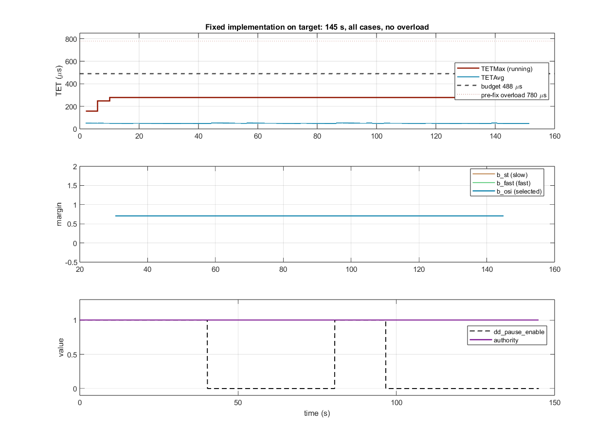
OSI_tests/overloadin_test/run_overloading_test.m compiles
the current runtime and the frozen pre-fix reference to host MEX, streams a
90 s worst-case signal through both, times every tick, and maps the
worst host phase onto target microseconds using measured anchors
(pre-fix: 793 µs host ↔ 780 µs target; worst
per-phase scale 2.1 from the slow-FFT phase). PASS requires the predicted
worst tick under 75% of the budget. Current runtime:
PASS (predicted ≈ 330 µs
conservative vs 278 µs measured; pre-fix predicts
~1700 µs and fails loudly). Run it before any target run after
touching fable_osi_runtime.m.
The fable_synthetic_suite ground-truth bench (known true
chordal margin at every update). Copperwood = pre-fix burst, blue =
time-sliced, black dashed = true margin.
| # | scenario | pre-fix | time-sliced | notes |
|---|---|---|---|---|
| 1 | healthy_broadband | PASS | PASS | identical accuracy (median error 0.014) |
| 2 | intensity_step | PASS | PASS | no false adaptation on ×5 input step |
| 3 | damage_step_broadband | PASS | PASS | authority moved 0.625 vs 0.750 s (limit 0.75) |
| 4 | damage_step_lowband | FAIL | FAIL | pre-existing quiet-band information limit; fails BOTH equally (viol 29.6% vs 33.8%) |
| 5 | silent | PASS | PASS | no alarms, no shed |
| 6 | gradual_softening | PASS | PASS | tracked + defended, same settle error 0.009 |
| 7 | damage_then_repair | PASS | FAIL* | *harness artifact: authority moved 0.625 s vs the 0.500 s limit — the block-stepped bench quantizes the 27 ms publish latency up to one full 0.125 s block (see note) |
| 8 | starts_damaged_improves | PASS | PASS | regulates onto target, fast un-latched recovery |
| 9 | regime_change_healthy | PASS | PASS | rebaseline, no lasting shed |
| 10 | transient_pulse | PASS | PASS | bounded reaction, full recovery |
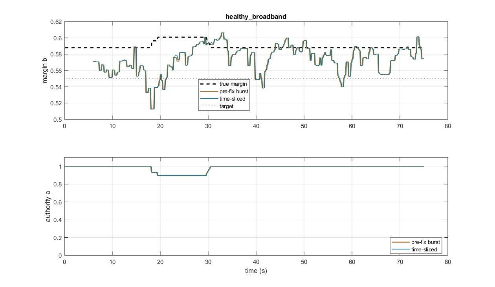
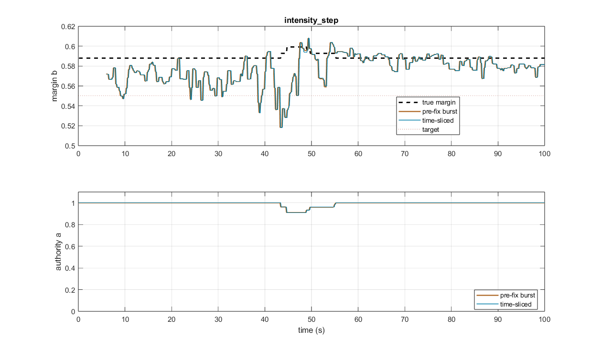
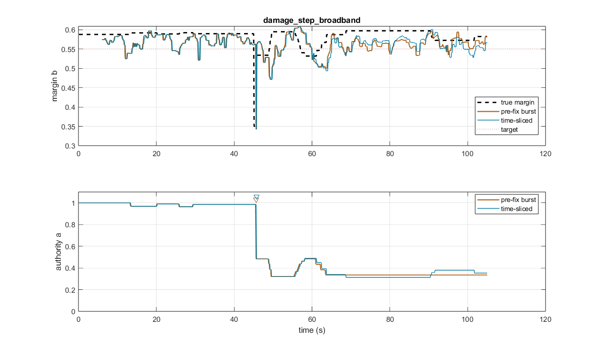
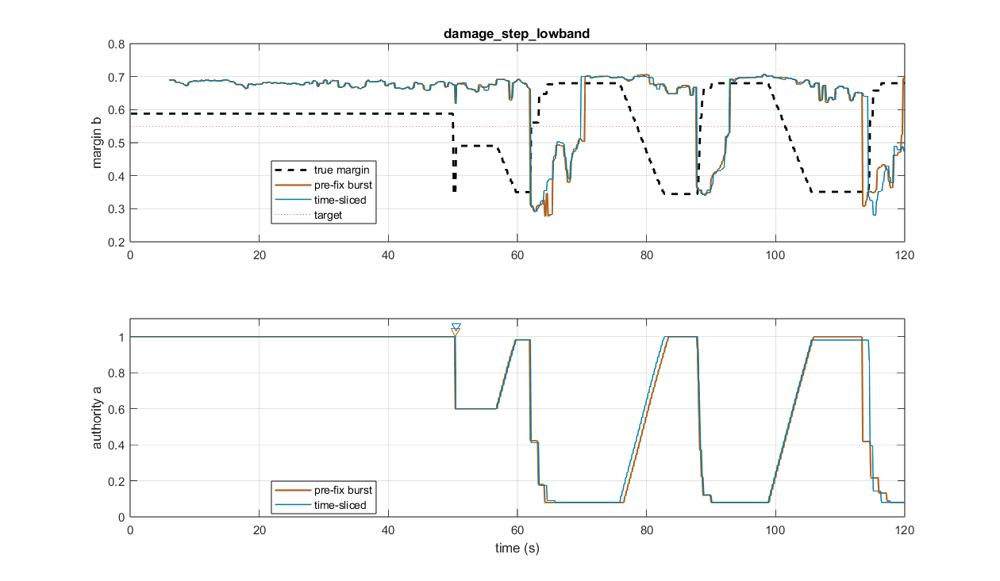
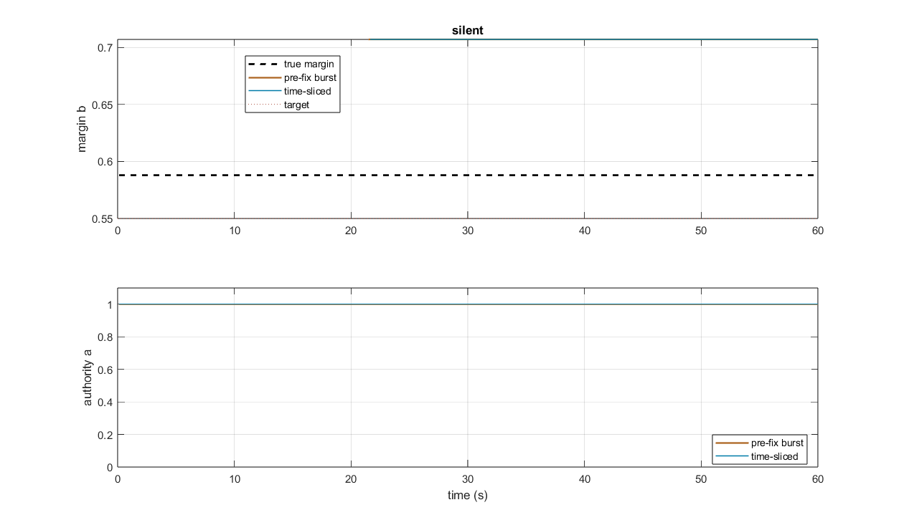
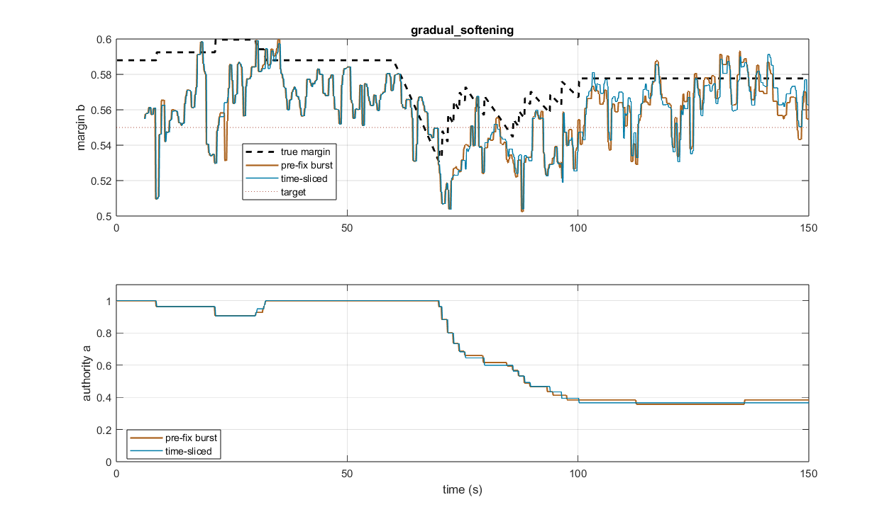
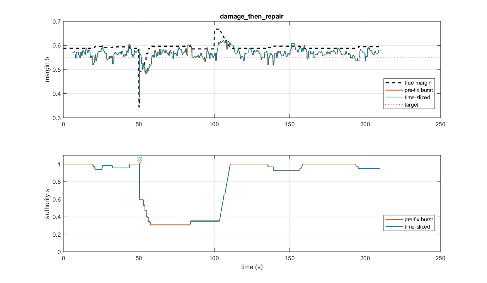
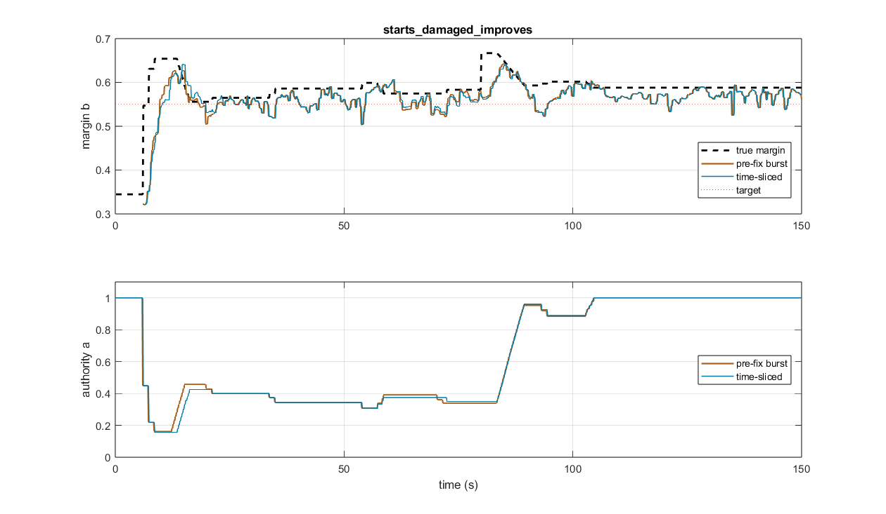
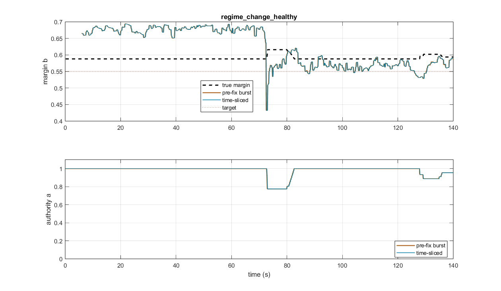
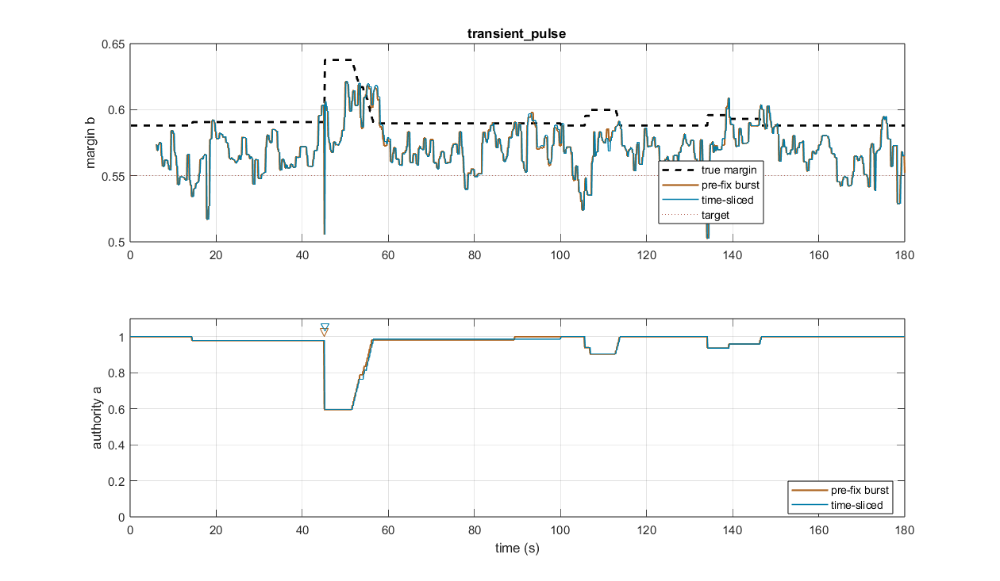
The three saved records replayed through both implementations, step-aligned:
| record | length | max |old − new| over margin AND authority |
|---|---|---|
| 20260617_1731 Pvar (instability event, 769 s excursion) | 824 s | 0 (identical) |
| 20260617_1749 Pvar (instability event) | 308 s | 0 (identical) |
| 20260630_1930 testing_OSI | 422 s | 0 (identical) |
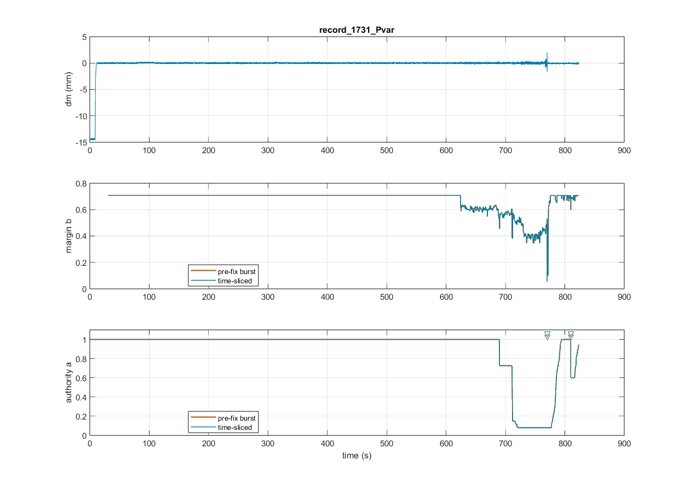
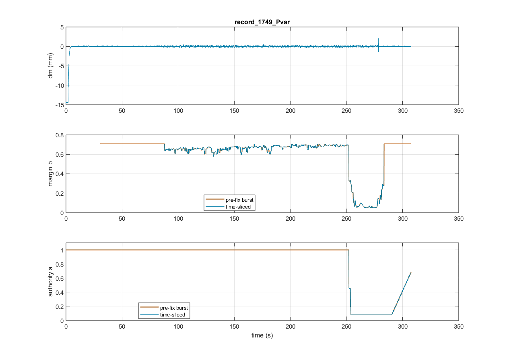
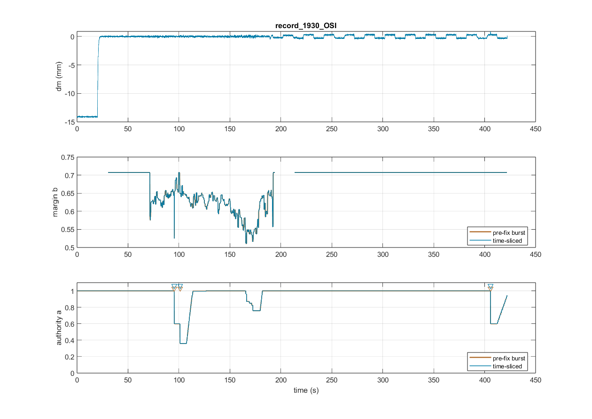
Keep multiplying the command signal (the existing
Apply OSI gain Product), for three reasons:
One caveat to watch: during a long deep shed the integrator can wind up (its output is attenuated while the error grows), which can overshoot when authority recovers. The fable law’s slow, latched recovery largely absorbs this; if it ever shows in tests, the right fix is back-calculation anti-windup on the PID using the post-product command — not moving the multiplication to the gains.
control_and_HS/OSI/fable_osi_runtime.m — time-sliced scheduler (arithmetic unchanged)model_ColumnSetup_00.slx — en wiring (always-on indicator), TSE decimation/stagger, OSI Margins ScopeOSI_tests/fable/test_fable_runtime_equivalence.m — mid-step sampling + record pathsOSI_tests/overloadin_test/ — overload regression test, frozen pre-fix reference, this comparison + reportsimulink_changes.md, OSI_tests/fable/fable_simulink.md — documentation